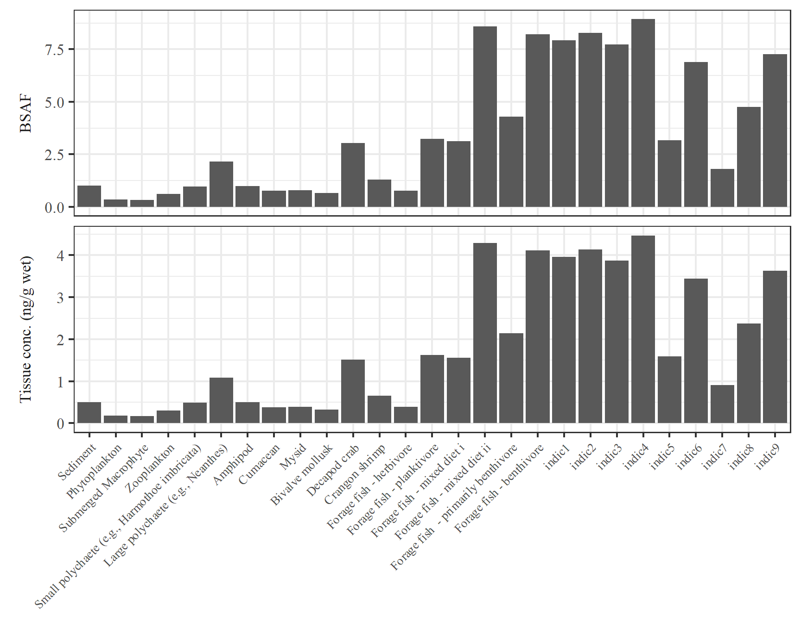
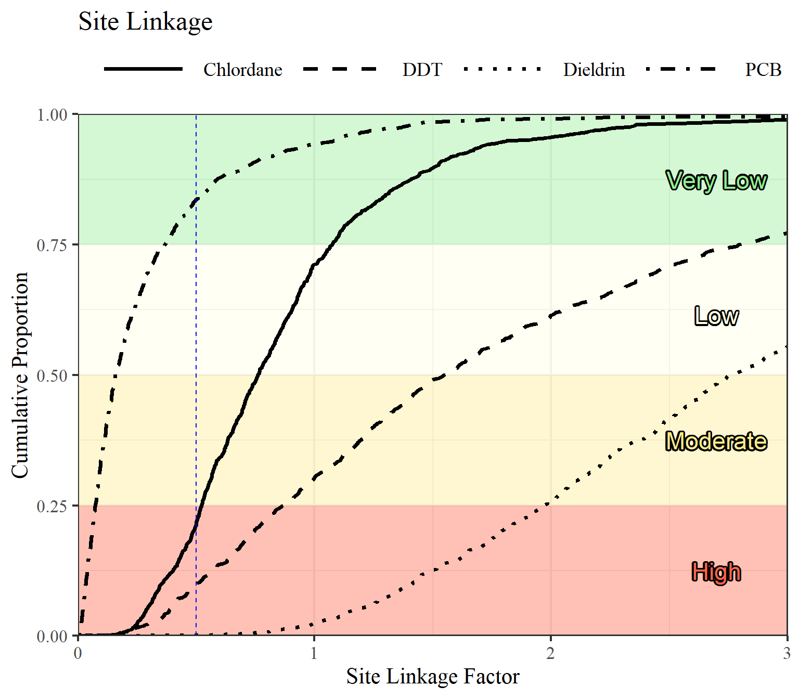

Install the package as follows:
install.packages('devtools')
library(devtools)
install_github('SCCWRP/SQObioaccumulation')
library(SQObioaccumulation)Run the bioaccumulation model with defaults:
# data inputs
data(biota)
data(constants)
data(contam)
data(mcsparms)
# calculated contaminant inputs
contamcalc <- cntcalc(contam, constants)
# run model
res <- bioaccum_batch(biota, contamcalc, constants)
# assign output to separate objects
cbiota <- res$cbiota
bsaf <- res$bsafCreat a summary table:
## # A tibble: 9 x 9
## Guild `Chlordanes BSA~ `Dieldrin BSAF ~ `DDTs BSAF (cal~ `PCBs BSAF (cal~
## <chr> <dbl> <dbl> <dbl> <dbl>
## 1 indi~ 5.30 2.10 11.2 9.13
## 2 indi~ 5.45 1.99 12.4 10.0
## 3 indi~ 5.26 2.25 9.55 7.93
## 4 indi~ 6.33 3.22 13.0 11.1
## 5 indi~ 2.28 1.21 4.43 3.84
## 6 indi~ 5.42 3.89 7.30 6.64
## 7 indi~ 1.40 0.924 2.05 1.84
## 8 indi~ 4.15 3.71 3.98 4.03
## 9 indi~ 4.75 1.70 11.6 9.32
## # ... with 4 more variables: `Chlordanes Conc (ng/g)` <dbl>, `Dieldrin
## # Conc (ng/g)` <dbl>, `DDTs Conc (ng/g)` <dbl>, `PCBs Conc (ng/g)` <dbl>Plot BSAF and tissue concentration estimates for a selected contaminant:

Make a table of BSAF and tissue concentration estimates for a selected contaminant:
## # A tibble: 2 x 28
## Output Sediment Phytoplankton `Submerged Macr~ Zooplankton
## <fct> <dbl> <dbl> <dbl> <dbl>
## 1 Tissu~ 0.5 0.177 0.166 0.302
## 2 BSAF 1 0.355 0.331 0.605
## # ... with 23 more variables: `Small polychaete (e.g., Harmothoe
## # imbricata)` <dbl>, `Large polychaete (e.g., Neanthes)` <dbl>,
## # Amphipod <dbl>, Cumacean <dbl>, Mysid <dbl>, `Bivalve mollusk` <dbl>,
## # `Decapod crab` <dbl>, `Crangon shrimp` <dbl>, `Forage fish -
## # herbivore` <dbl>, `Forage fish - planktivore` <dbl>, `Forage fish -
## # mixed diet i` <dbl>, `Forage fish - mixed diet ii` <dbl>, `Forage fish
## # - primarily benthivore` <dbl>, `Forage fish - benthivore` <dbl>,
## # indic1 <dbl>, indic2 <dbl>, indic3 <dbl>, indic4 <dbl>, indic5 <dbl>,
## # indic6 <dbl>, indic7 <dbl>, indic8 <dbl>, indic9 <dbl>Run Monte Carlo simulations (MCS) with results from bioaccumulation model and additional inputs:
Summarize MCS results:
## # A tibble: 4 x 12
## # Groups: Compound [4]
## Compound `0%` `1%` `5%` `10%` `25%` `50%` `75%` `90%` `95%`
## <chr> <dbl> <dbl> <dbl> <dbl> <dbl> <dbl> <dbl> <dbl> <dbl>
## 1 Chlorda~ 0.158 0.219 0.292 0.358 0.523 0.761 1.07 1.52 1.91
## 2 DDT 0.121 0.209 0.389 0.503 0.869 1.55 2.80 4.72 6.55
## 3 Dieldrin 0.554 0.841 1.18 1.42 1.97 2.77 3.94 5.41 6.45
## 4 PCB 0.00525 0.00859 0.0208 0.0333 0.0732 0.158 0.368 0.718 1.09
## # ... with 2 more variables: `99%` <dbl>, `100%` <dbl>Plot cumulative distribution curves for MCS:

Get overall SQO assessment:
## # A tibble: 4 x 9
## Compound `Observed tissu~ `Chemical expos~ `Estimated tiss~
## <chr> <dbl> <chr> <dbl>
## 1 Chlorda~ 2.28 Very Low 1.74
## 2 DDT 4.85 Very Low 7.52
## 3 Dieldrin 0.25 Very Low 0.693
## 4 PCB 36.5 Moderate 5.77
## # ... with 5 more variables: `Site linkage 25%` <dbl>, `Site linkage
## # 50%` <dbl>, `Site linkage 75%` <dbl>, `Site linkage category` <chr>,
## # `Site assessment category` <chr>